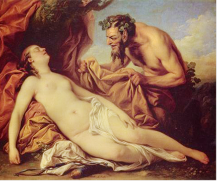

Vua thành Cadmée là Nyctée sinh được một người con gái đặt tên là Antiope. Nàng lớn lên đến đâu đẹp ra đến đấy. Nhiều vương tôn, công tử ngấp nghé cầu hôn. Nhưng họ chưa kịp sắm sửa lễ vật, định tháng chọn ngày thì nàng Antiope đã rơi vào tay một vị thần: thần Satyre nửa người nửa dê. Ngang trái thay cái cảnh hạt gạo tám xoan đem chan nước cà! Nhưng không, vị thần Satyre này là một vị thần đặc biệt. Cái hình dạng nửa người nửa dê thô lỗ, man rợ chỉ là cái lốt vỏ bề ngoài. Đây chính là thần Zeus, đấng phụ vương tối cao của thế giới thần thánh và loài người, và như vậy thì mọi người có thể tạm yên tâm vì Zeus thì... dù sao rất xứng đáng. Thần Zeus đã từng biến mình thành con bò mộng, thành hạt mưa vàng, thì cũng có thể biến mình thành con dê hoặc nửa người nửa dê chứ sao! Chẳng có gì đáng bận tâm về chuyện đó, miễn sao che được con mắt soi mói của Héra.

Cuộc tình duyên ái ân của đôi trai gái này thật là nồng mặn, nồng mặn đến nỗi Antiope không dám trở về sống với vua cha ở thành Cadmée nữa. Nàng vốn biết tính khí khắt khe của vua cha, vì thế nàng chỉ còn cách đi trú ngụ nơi khác. Nhà vua xứ Sicyon tên là Épopée đã đón tiếp nàng với tấm lòng hiếu khách và sau đó cưới nàng làm vợ. Nhưng sau đó Lycos, em của Nyctée, kéo quân sang vây đánh thành Sicyon giết chết Épopée, bắt Antiope về làm nô lệ cho vợ hắn tên là Dircé. Trên đường đi, Antiope đã sinh con. Nàng sinh đôi, hai đứa giống nhau như đúc. Nàng đặt tên hai anh em là Zéthos và Amphion. Trong tình cảnh quẫn bách, cùng cực như vậy, Antiope chỉ còn cách đặt hai đứa trẻ vào một cái lẵng rồi bỏ chúng giữa rừng và cầu khấn thần Zeus che chở cho chúng. Nàng tin rằng thần Zeus không thể nào lại để cho hai đứa con, hai giọt máu của thần bị chết. Quả thật như vậy, thần Zeus đã xui khiến một người chăn chiên lùa súc vật đi chăn để đón được hai đứa bé. Từ đó trở đi hai anh em sống với gia đình người chăn chiên và đương nhiên là hai anh em coi người chăn chiên là bố đích thực của mình. Lớn lên Zéthos là một chàng trai khỏe mạnh, tháo vát. Chàng gánh vác đỡ đần được cho gia đình nhiều công việc nặng nhọc. Chàng ham mệ luyện tập võ nghệ, phóng lao, bắn cung, quyền thuật... Chàng săn bắn suốt ngày trong rừng sâu với một niềm say mê kì lạ. Còn Amphion thì tính nết lầm lỳ trầm lặng hơn. Chàng ưa suy tư, mơ mộng, thường ngồi một mình thổi sáo trong ánh nắng chiều thoi thóp nhạt màu. Thần Apollon đem lòng yêu mến người con trai yêu âm nhạc này. Thần ban cho chàng một chiếc đàn cithare có bộ dây vàng. Từ khi có cây đàn huyền diệu này, Amphion gắn bó với nó suốt ngày. Tiếng đàn của chàng có một sức khơi động đặc biệt, chẳng những làm rung động lòng người mà còn thức tỉnh cả thế giới cỏ cây, non nước.
Trong khi các chàng trai, con của Antiope, sống yên bình trong túp lều tranh của người chăn chiên thì bà mẹ, nàng Antiope, bị Dircé hành hạ khổ cực trăm chiều. Ngày ngày phải làm việc quần quật, tối đến bị vứt vào trong ngục tối, cùm xích chân tay. Nàng cầu khẩn thần Zeus và các vị thần Olympe giải thoát cho nàng khỏi sống cảnh đọa đầy như dưới địa ngục của thần Hadès. Thần Zeus đã không quên nàng, và bằng uy quyền của đấng tối cao toàn năng, Zeus đã đưa nàng ra khỏi ngục tối. Nàng chạy đến trú ngụ, và một sự tình cờ do bàn tay Zeus xếp đặt, ở nhà người chăn chiên đã nuôi nấng hai đứa con nàng. Cuộc sống tưởng đã tạm yên ai ngờ trong một ngày Hội Dionysos, Dircé lại lần tìm được nơi Antiope trú ngụ. Mụ ta cùng với những người phụ nữ ở đô thành vào trong núi dự lễ, tay cầm gậy thyrse, cổ choàng một vòng dây leo như dây nho, đi lang thang thế nào mà lại vào đúng ngay túp nhà Antiope đang ở. Với thói quen hống hách của một vị hoàng hậu đầy quyền thế, mụ ta ra lệnh cho Amphion phải bắt Antiope trói vào sừng một con bò rừng hung dữ để quật chết người nữ nô lệ bỏ trốn của mụ. Amphion không hề hay biết Antiope là mẹ mình, chàng dùng tất cả sức lực bắt giữ con bò rừng hung ác rồi làm theo lệnh của Dircé. Chàng Zéthos tỏ ra tháo vát và mưu trí hơn nhiều. Chàng trói quặt cánh tay của Antiope lại và ghì dây trói vào sừng bò. Chỉ cần có lệnh là hai anh em thả con bò ra đánh cho nó chạy lồng lên. May thay, lúc ấy người chăn chiên từ ngoài đồng cỏ trở về nhà. Thấy cảnh tượng đau lòng như vậy, người chăn chiên hét lớn:
- Hỡi Zéthos và Amphion! Dừng ngay lại! Không được làm gì khi chưa có lệnh của ta! Các ngươi thật là đồ bất hạnh. Các ngươi có biết người đàn bà mà các ngươi hành hạ đây là ai không? Chính là mẹ các ngươi đó! Bà đã sinh ra các ngươi từ cuộc tình duyên với thần Zeus. Ta chỉ là người được thần Zeus giao cho sứ mạng nuôi nấng các ngươi khi bà lâm vào cảnh bất hạnh không thể đem theo các ngươi được.
Nghe người chăn chiên nói, Zéthos và Amphion bàng hoàng. Hai anh em hiểu ra sự thật. Họ lập tức lao vào bắt trói mụ Dircé và cởi trói cho người mẹ kính yêu của họ. Còn mụ Dircé, kẻ đã nghĩ ra cái trò trừng phạt tàn bạo này sẽ là người hưởng nó đầu tiên. Con bò hung dữ được thả ra. Nó chạy lồng lên và Dircé phải đền tội ác của mụ một cách xứng đáng.
Hai anh em tiếp tục trở về thành Cadmée. Họ vào trong cung bắt tên vua Lycos ra hành hình, rồi lên ngôi trị vì ở đô thành danh tiếng có bảy cổng này. Họ bàn nhau xây dựng lại thành Cadmée cho vững chãi hơn, kiên cố hơn. Chàng Zéthos khỏe mạnh ít ai bì kịp, đem sức ra chuyển những tảng đá về, xếp chồng lên nhau thành một bức tường cao ngất, vững vàng. Còn chàng Amphion với cây đàn cithare của mình ngồi gảy lên những âm thanh huyền diệu. Tiếng đàn của Amphion đã làm cho những tảng đá thức tỉnh và chúng dường như hiểu ý định của người gảy đàn. Chúng bảo nhau lăn đến chỗ xây bức tường thành, ngoan ngoãn cõng nhau lên đâu vào đấy, vừa khít, chẳng mấy chốc đã thành một bức tường cao ngất vững chãi. Xây xong bức tường thành, danh tiếng hai anh em Zéthos và Amphion vang dội đến trời xanh. Chàng Zéthos lấy một người thiếu nữ anh hùng tên là Thébée làm vợ. Chính từ tên người thiếu nữ này mà ra đời cái tên thành “Thèbes”. Còn Amphion lấy nàng Niobé con gái của Tantale làm vợ, người đã can tội xúc phạm đến nữ thần Léto để đến nỗi bị hai người con của nữ thần là Apollon và Atémix trừng phạt rất nặng nề, thê thảm.
Về Antiope, người xưa kể thêm, do việc bà để hai đứa con trừng phạt Dircé nên thần Dionysos nổi giận (vì Dircé là tín đồ tôn giáo Dionysos). Thần làm cho nàng phát điên, đi lang thang khắp nơi trên đất Hy Lạp. Cuối cùng Antiope gặp Phocos, cháu gọi Sisyphe bằng ông, chữa cho khỏi bệnh và hai người kết hôn với nhau.